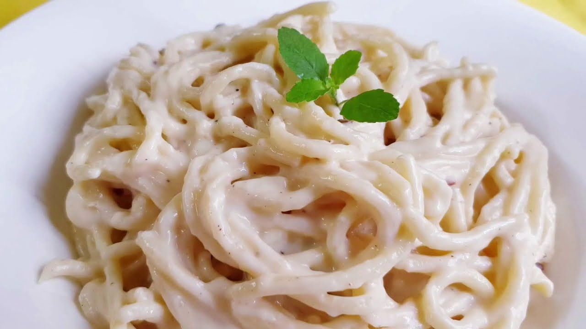

Spaghetti Alfredo

This is a recipe for a simple spaghetti pasta with white sauce that can be made in less than half an hour. It involves boiling the spaghetti and adding it to a white sauce made with cream, parmesan cheese, herbs and spices. While this might not be the most traditional or authentic way of cooking this dish we shall be compromising taste for speed.
Ingredients
- Spaghetti pasta
- Cream
- Pepper
- Garlic
- Olive oil
- Cream
- Parmesan cheese (shredded)
- Nutmeg
- Oregano
Steps
- Boil spaghetti in a bowl of salted water till they turn opaque. Taste to see if they are cooked appropriately
- Sautee some garlic in another pan with olive oil
- Add half a cup of cream along with some leftover pasta stock to the pan along with 250g shredded parmesan chese. Reduce the mixture till it has a sticky and thick consistency
- Add some pepper, nutmeg and oregano to the pasta to give it an earthy flavor
- Drain the pasta and mix it with the sauce till it forms an even coating
- Add salt as per taste
- Enjoy :)